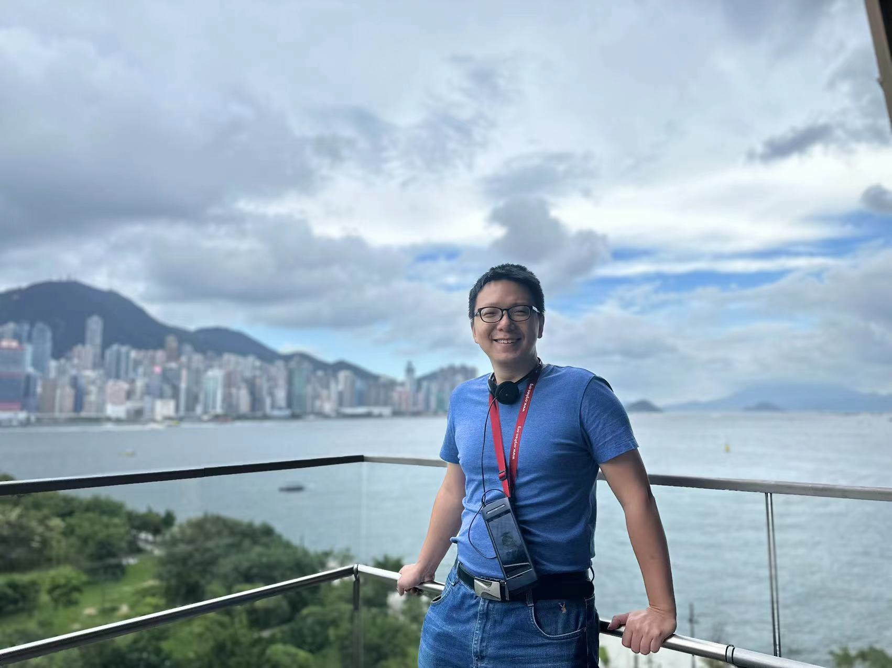
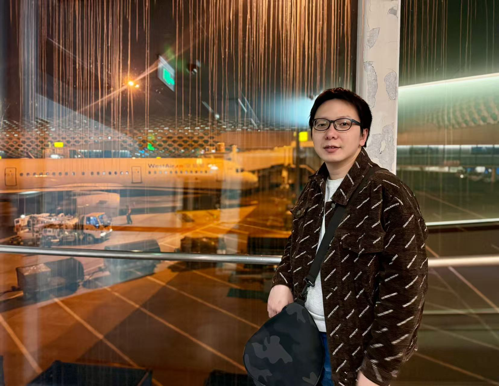
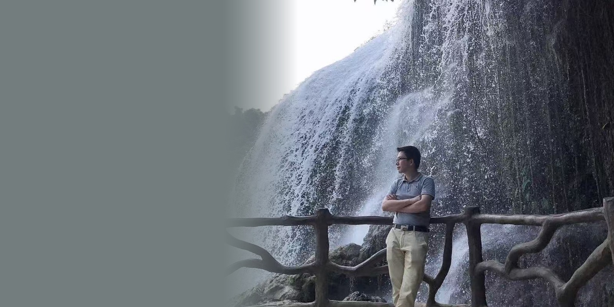
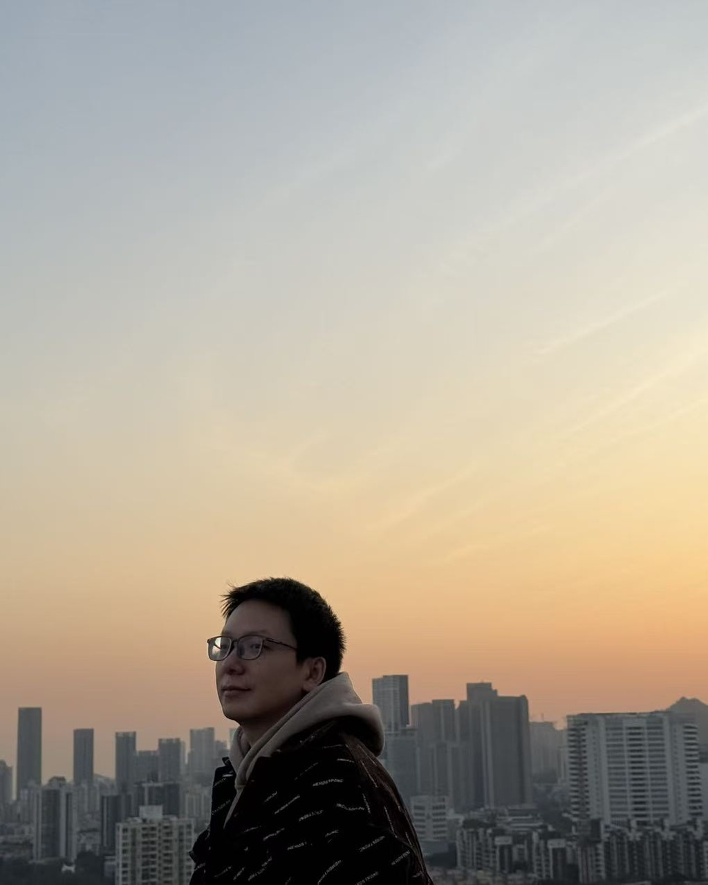

01 / TENURE
17 年17 yrs
多领域从业经验Cross-sector experience



个人简介Profile
Kyle Li
深圳本地运营与项目负责人，专注海外科技与 Web3 全球增长、跨文化团队搭建，以及大湾区供应链与本地化落地。17 年金融风控与量化产品化底色，具备从零搭建国际化团队（20+ 人）与 AI 多代理内容工作流的实战经验，中英文均可作为工作语言。Shenzhen-based operator and project lead specializing in global growth for overseas tech and Web3, cross-cultural team building, and Greater Bay Area supply-chain execution. Backed by 17 years in financial risk control and quantitative productization, I build international teams from zero and run multi-agent AI content workflows in both Chinese and English.
01 / TENURE
多领域从业经验Cross-sector experience
02 / TEAM
国际化团队搭建International team built
03 / REACH
3 个月全球社媒曝光3-month global social impressions
04 / CAPITAL
主导私募产品募资Private-fund fundraising led

01 / RESOURCE INTEGRATION
识别业务目标与关键约束，寻找所需资源，建立合作关系并协调不同背景的参与者。 Identify goals and constraints, source key resources, build partnerships, and align stakeholders across backgrounds.
02 / TEAM BUILDING
围绕业务目标组织团队，明确岗位分工、汇报关系、协作流程与执行节奏。 Organize teams around business goals with clear roles, reporting lines, workflows, and execution cadence.
03 / PROJECT EXECUTION
将复杂目标拆解为可执行步骤，在跨团队协作和业务不确定的阶段持续推动进展。 Break complex objectives into actionable steps and keep projects moving through cross-team ambiguity.
先后深耕银行金融、量化交易、出海游戏与 Web3 产品，同时也是精酿品牌「嗨啤到家」联创。跨界切换背后，核心始终一以贯之：在早期不确定中看清约束、聚拢资源与团队，把复杂想法真正落地。
Across banking, quantitative trading, overseas gaming, and Web3—and as a co-founder of Haipi Craft Beer (嗨啤到家)—the core challenge has always been the same: reading constraints early, rallying people and resources, and turning ambiguity into execution.
中英文均可作为工作语言（CET-6 / 雅思 6.0），主持过全英文线上路演与 AMA，也带过跨时区国际团队。习惯将合规与风控前置，确保每一步推进既快又稳。现居深圳。
Working in both Chinese and English (CET-6; IELTS 6.0), I have hosted all-English roadshows and AMAs and led cross-timezone teams, keeping compliance and risk upfront so projects move fast without breaking. Based in Shenzhen.
01 / INTERNATIONAL GROWTH
国际团队与生态增长International team & ecosystem growth
从零组建跨地区团队，组织社区、内容和增长协作。三个月空投活动预算不足 3 万美元，约 400 万 Twitter 曝光、增长 10 万粉丝、7 万人参与；其中约 68% 注册成为 SaaS 产品种子用户。 Built a cross-region team from scratch for community, content, and growth. On a budget under USD 30K, a 3-month airdrop reached ~4M Twitter impressions, +100K followers, and 70K participants, with ~68% converting into SaaS seed users.
02 / CAPITAL & QUANT
资金组织与风险管理Capital organization & risk control
主导私募产品实际到账募资 4,000 万元；团队最高管理规模约 5 亿元。另有约 3,000 万元 MoM 账户单独管理。个人量化交易经历另有实盘比赛奖项及账户记录。 Led RMB 40M in private-fund fundraising; peak team AUM reached ~RMB 500M, with an additional ~RMB 30M managed separately in MoM accounts. Personal quant track record also includes live-trading awards and account records.
03 / AI OPERATIONS
多代理内容运营工作流Multi-agent content operations workflow
利用标准化运营工作流搭建内容、活动、社群（覆盖 X / YouTube / Discord / GitHub / Hugging Face / Reddit）和商务拓展四条工作线，明确岗位分工、汇报关系和对外发布审批，由我负责最终决策与确认。 Built a 4-line workflow across content, campaigns, community (X, YouTube, Discord, GitHub, Hugging Face, Reddit), and BD with clear reporting lines and final human approval.
01 / CAREER
运营管理、项目负责人及跨团队协作岗位，尤其适合需要从零搭建业务、组织团队或推动复杂项目的阶段。 Operations leadership, project lead, and cross-functional roles—especially suited for 0-to-1 team building and complex execution.
02 / BUSINESS
中国市场业务拓展、本地团队搭建、跨境协作，以及电子元器件采购和大湾区供应链对接（供应商接洽、样品确认与价格交期谈判）。 China market expansion, local team setup, cross-border coordination, and GBA supply-chain / electronic-components sourcing execution.
03 / QUANT
量化策略研究、交易系统与产品化、资金管理及相关合作。 Quantitative strategy research, trading-system productization, and capital-management partnerships
持续关注 Tesla、SpaceX、NVIDIA，以及人工智能、机器人和世界模型等科技方向。 Closely following Tesla, SpaceX, NVIDIA, AI, robotics, and world models.
高级项目顾问 · 已结束Senior Project Advisor · concluded
产品运营 · Web3 / RWA / CEX 交易平台Product Operations · Web3 / RWA / CEX trading platform
BD 负责人 · Web3 RWA / SocialFiHead of BD · Web3 RWA / SocialFi
互联网产品运营总监 · 公链 / 钱包 / DEXDirector of Internet Product Operations · L1 / wallet / DEX
基金经理 · 备案编号 STF839 · 管理人昊业资产Fund manager · filing STF839 · manager Haoye Asset
运营合伙人 · 出海游戏工作室Operating partner · overseas gaming studio
量化研究员Quantitative Researcher
其中产品内约 1.2 亿元，管理人中的管理人账户约 3,000 万元。 Of that, about RMB 120 million was in products, and about RMB 30 million in manager-of-managers accounts.
客户经理Account Manager
产品助理Product Assistant
桂林理工大学 · 本科 · 全日制 · 市场营销管理 · 2005–2009。在校时担任英文广播站播音员，写过并主持英语节目，组织过外语角和语伴活动；也参加过《辐射 3》游戏汉化小组的剧情翻译和社群协调。 Guilin University of Technology, full-time bachelor’s degree in Marketing Management, 2005–2009. Served as an announcer at the English radio station, writing and hosting programs and organizing language corners and language-exchange activities; also joined the Fallout 3 localization group for story translation and community coordination.